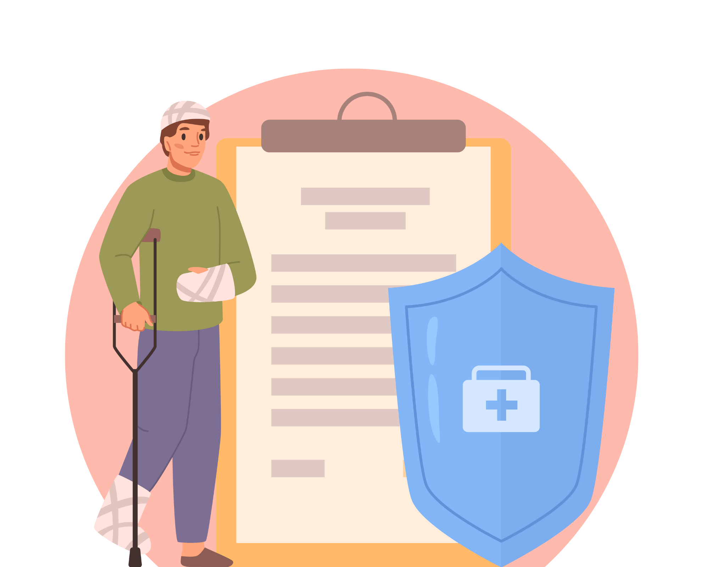
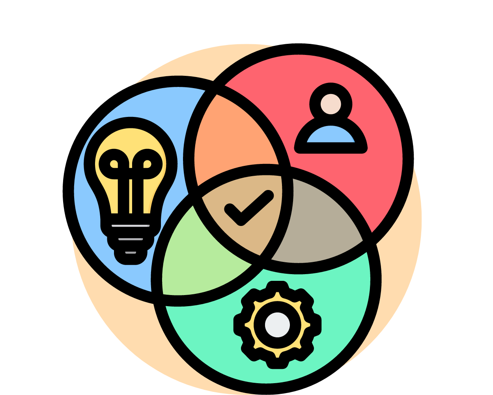

Detta arbete bör vara en naturlig del av verksamheten och inkludera alla aspekter
av arbetsmiljön – såväl fysiska som psykologiska och sociala faktorer.

Delaktighet och dialog
För att lyckas krävs samarbete. Ge medarbetare och skyddsombud möjlighet att delta aktivt i
arbetsmiljöarbetet. Tillsammans kan ni identifiera risker och utveckla lösningar som verkligen fungerar.

Policy och rutiner
Ett välorganiserat arbetsmiljöarbete börjar med en arbetsmiljöpolicy. Den ska beskriva era mål och hur
ni arbetar för att skapa säkra och hälsosamma förhållanden. För att underlätta arbetet behöver det även finnas
tydliga och skriftliga rutiner, särskilt om ni är fler än tio anställda.

Riskbedömning och handlingsplan
Vid förändringar i verksamheten, eller när risker upptäcks, ska du som arbetsgivare:
- Identifiera vilka risker som finns och bedöma om de är allvarliga
- Dokumentera riskbedömningen
- Genomföra åtgärder omedelbart eller lägga in dem i en skriftlig handlingsplan med tydliga ansvar och tidsramar

Snabbt agerande vid tillbud eller olycksfall
Om något inträffar – till exempel en olycka eller ett allvarligt tillbud – ska åtgärder vidtas så snart som möjligt
för att undvika att det händer igen. Det kan handla om att förbättra rutiner, utbilda personal eller justera arbetsmetoder.

Företagshälsovård och extern expertis
Om kompetensen saknas inom den egna organisationen ska du som arbetsgivare anlita extern hjälp, till exempel företagshälsovård,
för att hantera specifika arbetsmiljörisker eller rehabiliteringsinsatser.

Årlig uppföljning
Minst en gång om året ska du utvärdera arbetsmiljöarbetet. Om något inte fungerar som det ska, är det dags att göra förbättringar. Uppföljningen ska dokumenteras om ni är fler än tio anställda.
Genom att prioritera arbetsmiljöarbetet kan du skapa en hållbar arbetsplats där alla kan känna sig trygga och motiverade. Vad kan du göra redan idag för att förbättra arbetsmiljön?